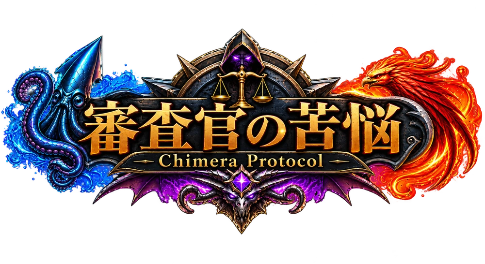
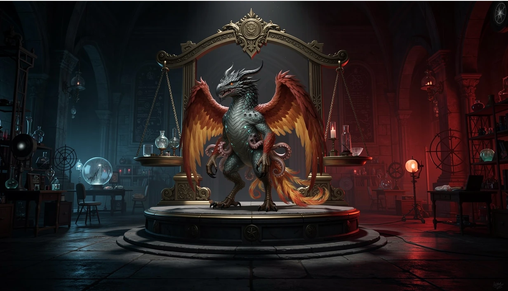
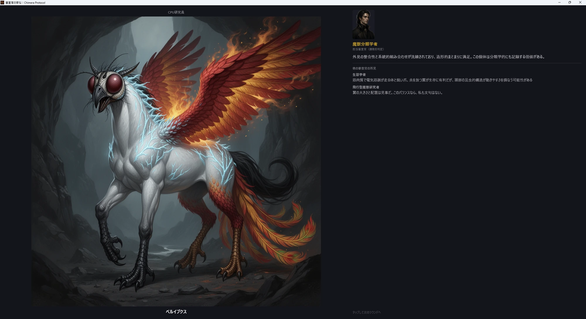
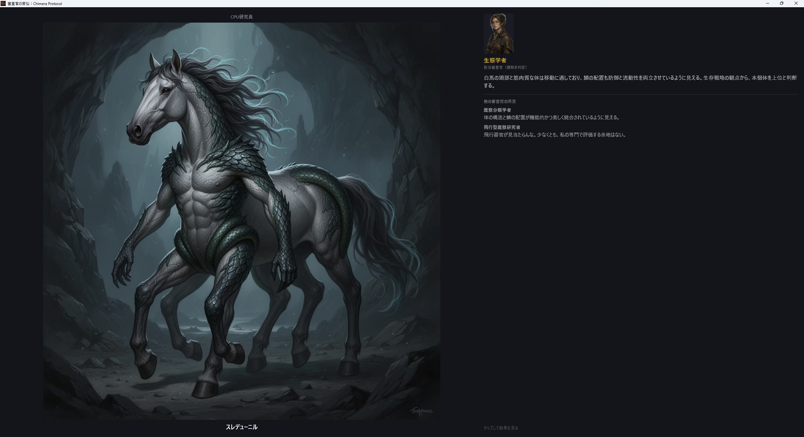

審査官を読む。
対戦前に発表される審査官と評価傾向を確認。今回、求められる研究成果は？

Steamで見る
CHIMERA PROTOCOL ／ キメラ創造・対戦型カードゲーム
創るのは、あなただけのキメラ。
勝敗を決めるのは、彼らの美学。
近日登場 Windows PC
01 / THE PROTOCOL
バハムートの頭。クラーケンの体。フェニックスの手足。
魔獣カードを組み合わせ、姿も能力も異なるキメラを創造しよう。
目指すのは、審査官を唸らせる研究成果。
何を創るか。そして、誰に見せるか。
その選択が、3本勝負の行方を変える。
ASSEMBLE YOUR CHIMERA
頭・体・手足。3つの選択から生まれる、
予想もつかない姿と能力。
手持ちのカードが、次の研究素材になる。
研究成果の一例
対戦前に発表される審査官と評価傾向を確認。今回、求められる研究成果は？
手持ちの魔獣カードから素材を選択。頭・体・手足を組み合わせ、3体のキメラを創造。
誰に、どのキメラを見せるか。3体を各対戦へ配置し、3戦中2勝で勝利をつかむ。
02 / THE JUDGES
武力か、美しさか、生き抜く力か。
同じキメラでも、評価は変わる。
審査官の専門性を知ることが、勝利への第一歩。
飛行型魔獣研究者
翼がある。
それで、飛べるのか。
長年、飛行型魔獣を研究してきた専門家。翼の有無だけでなく、身体とのバランスや、他の器官が動きを妨げないかまで見極める。
登場する審査官の一部をご紹介。評価の着眼点は、各審査官の特徴をわかりやすくまとめたものです。
04 / GAMEPLAY
組み合わせ、送り出し、審査を待つ。
実際のプレイ映像で、研究の流れをご覧ください。
YOUR RESEARCH AWAITS
審査官の苦悩：Chimera Protocol
Steamでウィッシュリストに追加近日登場 Windows PC
{kind=link}
{kind=link}
{kind=link}
03 / THE VERDICT
審査官は、
どこまでも大真面目。
どんな姿のキメラにも、専門家としての講評を。
その評価に納得するかどうかは、
また別の話。

審査画面を見る ＋RESEARCH RECORD / ベルイプクス
ルシアン ／ 魔獣分類学者

審査画面を見る ＋RESEARCH RECORD / スレデュニル
ミレイユ ／ 生態学者
ゲーム内の実際の講評より抜粋。画面は開発中のものです。